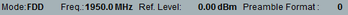

Parameters and Settings
The most important settings of the NB-IoT NPRACH measurement are displayed at the top of the measurement dialog.

All settings are defined via softkeys and hotkeys or using the main configuration dialog. The configuration dialog is described in the following sections. To open the dialog, select the "NPRACH" tab and press the "Config" hotkey.
Contents